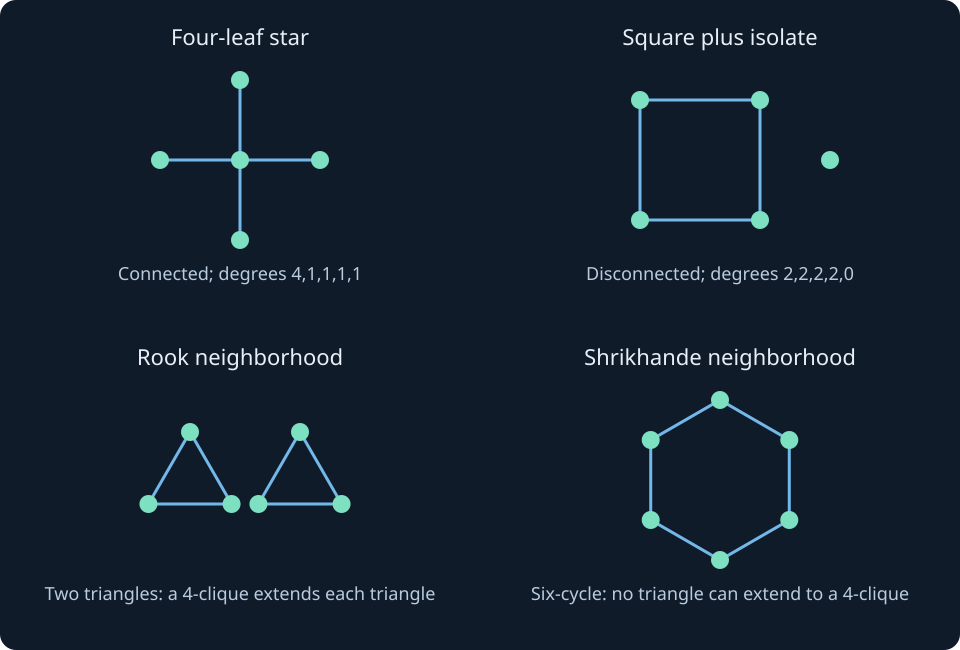

11. Cospectral constructions and graphs determined by their spectrum
An eigenvalue list is an invariant, not a universal fingerprint. A connected tree and a disconnected graph containing a cycle can have exactly the same adjacency eigenvalues, including every multiplicity and every closed-walk count. Other matrices distinguish that pair while admitting different collisions of their own. We build such collisions explicitly, prove two switching operations, construct the rook–Shrikhande pair, and then prove that several familiar families really are determined by their adjacency spectrum.
11.1 Permutation similarity is sufficient, but orthogonal similarity is weaker
Let $n$ be the common vertex count when spectra agree, and $m$ the edge count of a named graph. Write $I_q,J_q$ for the identity and all-ones matrices of order $q$. The notation $\chi_M(z)=\det(zI-M)$ denotes a characteristic polynomial; this subscripted polynomial is separate from the chromatic number $\chi(G)$.
Graphs $G,H$ are isomorphic if a bijection between their vertex sets preserves adjacency in both directions. In a fixed labeling, this is equivalent to $A_H=P^TA_GP$ for a permutation matrix $P$. Since $P^TP=I$, this is a similarity, so the characteristic polynomials and eigenvalue multisets agree. Relabeling cannot change the spectrum.
Two graphs are adjacency-cospectral when their adjacency characteristic polynomials agree. They need not be nonisomorphic; every graph is cospectral with itself. A nonisomorphic cospectral pair is the interesting collision. For real symmetric matrices, equality of spectra is equivalent to some orthogonal similarity, because orthonormal eigenbases can be matched by eigenvalue. That orthogonal matrix need not be a permutation and need not identify vertices.
The simplest useful collision has five vertices. The star $K_{1,4}$ has eigenvalues $2,-2,0,0,0$. The square together with an isolated vertex, $C_4\sqcup K_1$, has the same list, since $C_4$ has eigenvalues $2,0,0,-2$. Both characteristic polynomials are
$$\chi_A(z)=z^3(z-2)(z+2).$$They are not isomorphic: the star is connected and acyclic, with degree list $(4,1,1,1,1)$; the other graph has two components and degree list $(2,2,2,2,0)$. Consequently an adjacency spectrum alone does not determine connectivity, the full degree list, maximum degree, or whether a graph is a tree. There is no contradiction with recovering edges and triangles from traces. These graphs both have four edges and no triangles. In fact they have exactly the same number of closed walks of every length, while arranging those walks differently among vertices and components.
The accompanying exact enumeration checks all labeled simple graphs on one through four vertices. Their numbers of distinct isomorphism classes are $1,2,4,11$, and within each order every class has a different adjacency characteristic polynomial. The five-vertex collision is therefore minimal in vertex count. This is a finite exhaustive certificate, not an inference from rounded eigenvalues or a claim about larger orders.
Figure 11.1 displays the collision and the different local clique geometry used below.

11.2 Change the matrix, change which distinctions survive
Here $D=\operatorname{diag}(d_v)$ uses ordinary degrees, and the unsigned incidence matrix $R$ has $n$ vertex rows and $m$ edge columns. Identities in the two Gram spaces therefore have different sizes.
Write $L=D-A$ for the Laplacian and $Q=D+A$ for the signless Laplacian. The nullity of $L$ counts connected components, so it separates the five-vertex pair immediately. The nullity of $Q$ counts bipartite components, including isolated vertices, by the real unsigned-incidence rank result of chapter 3. The often-used “rank $n-1$ means bipartite” statement needs a connected graph; without that hypothesis several bipartite components supply several zero eigenvalues.
Laplacian spectra can have their own collisions. On vertices $0,\ldots,5$, take edge sets
$$E_G=\{02,05,13,14,23,34,35\},\qquad E_H=\{02,12,13,14,25,35,45\}.$$The exact determinant computation below gives the same Laplacian polynomial for both:
$$\chi_L(z)=z(z-3)^2(z-2)(z^2-6z+4).$$Yet $G$ contains triangle $134$, while $H$ is bipartite with parts $\{0,1,5\}$ and $\{2,3,4\}$. Their adjacency spectra differ, since their third traces are six and zero. These are explicit teaching examples, so no ambiguous lecture drawing is needed to reproduce them.
A second pair is $K_3\sqcup K_1$ and $K_{1,3}$. Their signless polynomials are both $z(z-4)(z-1)^2$, while their Laplacian and adjacency spectra differ. The star is bipartite and connected; the triangle-plus-isolate is not bipartite and is disconnected. Equal signless nullity is not the same statement as equal global bipartiteness when disconnected graphs are allowed.
The line graph explains this pair. Its vertices are the original edges; two are adjacent if those edges share an endpoint. Let $R$ be the unsigned vertex–edge incidence matrix. Each column has two ones, and distinct columns have dot product one precisely when their edges meet. Hence
$$RR^T=Q,\qquad R^TR=2I_m+A_{\operatorname{line}(G)}.$$If $r=\operatorname{rank}R$, the two Gram matrices share their $r$ positive eigenvalues with multiplicity. The remaining multiplicities of zero are $n-r$ and $m-r$ respectively. Thus line-graph adjacency eigenvalues are the positive signless eigenvalues minus two, together with $-2$ repeated $m-r$ times. In particular they are all at least $-2$. Dimension bookkeeping is essential; the complete eigenvalue lists of two rectangular Gram products need not be the same.
Both the triangle and three-edge star have line graph $K_3$, and adding an isolate does not change a line graph. The two original graphs in the example have the same vertex count, so their Gram zero padding agrees too. In general, equal line graphs do not recover how many isolated vertices were present in the original graph. Conversely, equal signless spectra determine $n$ and $2m=\operatorname{tr}Q$, so they determine the full line-graph adjacency spectrum through this formula.
11.3 Seidel switching toggles a cut, not the whole graph
In this vertex-coordinate formula $J=J_n$, $I=I_n$, and $a_{uv}=A_{uv}$ is zero or one. The cut consists of pairs with endpoints on opposite sides of the chosen vertex subset.
The Seidel matrix is $S=J-I-2A$. It has diagonal zero, entry $-1$ on an edge and $+1$ on a distinct nonedge. Choose a vertex subset $U$. Leave all adjacencies within $U$ and within its complement unchanged, and toggle every pair crossing the cut. If $T$ is diagonal with entries $+1$ on $U$ and $-1$ outside, then the switched Seidel matrix is
$$S'=TST,\qquad T^T=T=T^{-1}.$$The diagonal blocks retain their signs and the crossing blocks reverse theirs. This proves Seidel cospectrality by an explicit orthogonal similarity. It does not generally preserve adjacency eigenvalues or edge count. It is also not global complementation: complementing the whole graph gives $S_{\overline G}=-S_G$, whose eigenvalues are negated and need not be the original multiset.
For example, switching one vertex of a triangle removes its two incident edges and leaves one edge plus an isolate. The two Seidel spectra agree although their adjacency edge counts differ. Switching can sometimes give an isomorphic graph, so a chosen cut alone does not certify nonisomorphism.
There is nevertheless always a cut giving a nonisomorphic Seidel mate when $n\ge2$. Switching one vertex $u$ changes the edge count by $n-1-2d_u$. If any degree differs from $(n-1)/2$, this is nonzero. Otherwise the graph is regular with $d=(n-1)/2$. Switch a two-vertex set $\{u,v\}$. Its original crossing-edge count is $2d-2a_{uv}=n-1-2a_{uv}$, while there are $2(n-2)$ possible crossing pairs. The change in edge count is therefore $4a_{uv}-2$, again nonzero. This covers the remaining case. Only the one-vertex graph has no such alternative. The argument proves existence of a useful cut; it does not say every cut works.
11.4 Godsil–McKay switching preserves adjacency by a block reflection
Write $J_{p,q}$ for the rectangular $p\times q$ all-ones matrix. If the remaining set $Y$ is empty, its identity block has order zero and makes no contribution.
Partition the vertex set into nonempty cells $X_1,\ldots,X_k$ and a remaining set $Y$. Require two conditions. First, for each ordered pair $(i,j)$, every vertex in $X_i$ has the same number of neighbors in $X_j$. Second, each vertex of $Y$ has either zero, half, or all of the vertices of any $X_i$ as neighbors. A half-size case can occur only when that cell's size is even. Edges within $Y$ are unrestricted.
For each half-size case, remove those neighbors and connect the $Y$ vertex to the other half of that cell. Leave all other edges unchanged. We now prove that the resulting simple graph is adjacency-cospectral with the original.
For a positive integer $m$, set $F_m=2J_m/m-I_m$. Since $J_m^2=mJ_m$, we obtain $F_m^2=I_m$. It is a symmetric orthogonal reflection and $F_m\mathbf1=\mathbf1$. For a zero–one column $x$ with exactly $m/2$ ones, $J_mx=(m/2)\mathbf1$, so $F_mx=\mathbf1-x$. The zero column and all-ones column remain unchanged.
We also need the rectangular block identity. Suppose $B$ is $p\times q$, with constant row sum $r$ and constant column sum $c$. Counting its total sum gives $pr=qc$. Since $BJ_q=rJ_{p,q}$ and $J_pB=cJ_{p,q}$, expansion yields
$$F_pBF_q=B+\left(\frac{4r}{q}-\frac{2c}{p}-\frac{2r}{q}\right)J_{p,q}=B,$$where $c/p=r/q$ cancels the scalar coefficient. This is why both directions of neighbor-count constancy matter; a one-sided row-sum condition is insufficient.
Let $F$ be block diagonal with blocks $F_{|X_i|}$ and an identity on $Y$. Every $X_i$–$X_j$ adjacency block has constant row and column sums by the first condition and symmetry, so it stays unchanged. Every $X_i$–$Y$ column is unchanged or complemented exactly as prescribed. The $Y$–$Y$ block stays unchanged. Consequently $A'=FAF$ is precisely the switched adjacency matrix. Orthogonal similarity proves equal characteristic polynomials, including multiplicities.
Moreover $F\mathbf1=\mathbf1$, so $FJF=J$. Therefore $F(J-I-A)F=J-I-A'$, proving that the complements are also adjacency-cospectral. This extra conclusion is stronger than arbitrary adjacency cospectrality. The original Godsil–McKay paper, Construction 2.1 and Theorem 2.2, printed pp. 258–259, was actually read, including the block proof. We use only that inspected scope; its asymptotic conjectures are not asserted as current results.
For a complete small example, let $X=\{0,1,2,3\}$ be independent and let $Y=\{4,5,6\}$ be independent. Give the three $Y$ vertices neighbor sets $\{0,1\}$, $\{0,2\}$ and $\{0,3\}$. The original graph is a three-arm star with each edge subdivided once. Switching all half-columns makes vertex 0 isolated and makes the other six vertices a cycle. The degree lists change from $(3,2,2,2,1,1,1)$ to $(2,2,2,2,2,2,0)$, proving nonisomorphism independently of the shared spectrum. The construction guarantees equal spectra; this separate witness proves that they are different graphs.
11.5 Cartesian products add eigenvalues, including multiplicities
Put $n=|V(G)|$ and $m=|V(H)|$. The Kronecker matrix product $B\otimes C$ replaces entry $B_{ij}$ by the block $B_{ij}C$. For orthogonality, $\delta_{ia}$ is one when $i=a$ and zero otherwise.
The Cartesian product $G\square H$ has vertices $(u,v)\in V(G)\times V(H)$. Two pairs are adjacent when one coordinate is equal and the other follows an edge in its corresponding graph. This differs from a product requiring both coordinates to follow edges. With lexicographic ordering, its adjacency matrix is
$$A_{G\square H}=A_G\otimes I_m+I_n\otimes A_H.$$If $A_Gx_i=\lambda_ix_i$ and $A_Hy_j=\mu_jy_j$, the tensor vector with entries $x_i(u)y_j(v)$ satisfies
$$A_{G\square H}(x_i\otimes y_j)=(\lambda_i+\mu_j)(x_i\otimes y_j).$$These are all the eigenvalues, not merely some candidates. Choose orthonormal bases in the two factors. Then $(x_i\otimes y_j)^T(x_a\otimes y_b)=(x_i^Tx_a)(y_j^Ty_b)=\delta_{ia}\delta_{jb}$. The $nm$ tensor vectors form an orthonormal basis of an $nm$-dimensional space. Repeated sums receive the sum of all contributing product multiplicities. This completes the dimension argument that a calculation with one eigenvector pair alone would miss.
For $K_4\square K_4$, each factor has eigenvalues $3$ once and $-1$ three times. The sum spectrum is therefore $6$ once, $2$ six times, and $-2$ nine times. Geometrically this is the $4\times4$ rook graph: cells $(i,j)$ are adjacent when they share a row or column. Every cell has six neighbors. A row supplies a four-clique, and no clique is larger: if two clique vertices share a row but have different columns, any vertex adjacent to both must share that row too. The column case is the same.
11.6 Equal regular spectra can hide different clique geometry
The group $\mathbb Z_4^2$ consists of ordered pairs of residues modulo four; addition and subtraction act on each coordinate modulo four. Its Cayley adjacency below uses exactly the listed allowed differences.
In the rook graph take $X=\{(0,0),(1,1),(2,2),(3,3)\}$. It is independent. Each remaining cell $(i,j)$ with $i\ne j$ is adjacent to exactly the two diagonal cells $(i,i),(j,j)$, half of $X$. Godsil–McKay switching on $X$ is therefore valid. The resulting graph is the Shrikhande graph in this construction. It remains 6-regular: each outside cell exchanges two diagonal neighbors for two others; each diagonal vertex exchanges six outside neighbors for the other six. It has the same spectrum $6,2^{(6)},(-2)^{(9)}$.
We can prove nonisomorphism by examining neighborhoods. In the rook graph the six neighbors of any vertex induce two disjoint triangles, its row and its column. In the switched graph every neighborhood instead induces a six-cycle. Here are enough details to check that assertion without trusting a picture.
Simultaneously permuting the four row and column labels preserves the diagonal switching set. There are only two vertex types under these symmetries: diagonal and off-diagonal. At diagonal vertex $(0,0)$, the new neighbors are the six off-diagonal cells $(i,j)$ with $i,j\in\{1,2,3\}$ and $i\ne j$. Their unchanged rook adjacencies give one cycle of length six. At off-diagonal vertex $(0,1)$, the neighbors are diagonal cells $(2,2),(3,3)$ and cells $(0,2),(0,3),(2,1),(3,1)$. Their induced edges form the cycle
$$(2,2)-(0,3)-(0,2)-(3,3)-(2,1)-(3,1)-(2,2).$$A four-clique containing a vertex would require a triangle among its neighbors. A six-cycle has none, so the Shrikhande graph has no four-clique. It does have triangles, since any adjacent pair within a neighborhood extends with its central vertex. Its clique number is three, whereas the rook graph's is four. Equal regular adjacency spectra do not determine clique number.
Both graphs are connected: their shared top eigenvalue 6 is simple and they are regular. Chapter 10's three-eigenvalue characterization gives strongly regular parameters $(16,6,2,2)$ for both: $b=(6-2)(6+2)/16=2$ and $a=b+2-2=2$. Even these complete two-distance counts do not determine isomorphism.
A second exact description uses the additive group $\mathbb Z_4^2$: join vertices whose difference lies in $\{\pm(1,0),\pm(0,1),\pm(1,1)\}$. The code verifies an explicit sixteen-entry bijection from the switched rook labeling to this Cayley description, checking every pair's adjacency exactly. This avoids inferring identity merely from a shared name or a shared spectrum.
11.7 Some graphs really are determined by adjacency spectrum
A graph is determined by its adjacency spectrum, abbreviated DS here, if every finite simple graph with that same spectrum is isomorphic to it. The comparison includes disconnected candidates. We now use spectral invariants to exclude all alternatives for several families.
Complete graphs. A candidate with the spectrum of $K_n$ has $n$ vertices and $2m=(n-1)^2+(n-1)=n(n-1)$. It has every possible edge and is $K_n$. Another route repairs a subtle shortcut: a graph with no induced three-vertex path is a disjoint union of cliques, not necessarily one clique. The lack of such a path follows from interlacing when the least eigenvalue is at least $-1$, since that path has least eigenvalue $-\sqrt2$. Each noncomplete connected component would contain an induced three-vertex path from a shortest-path argument, so components are cliques. In the $K_n$ spectrum the eigenvalue $n-1$ then forces a component of size $n$, exhausting all vertices. Either proof handles the missing connectivity issue.
A regularity recognition lemma. The spectrum determines the average degree $\bar d=\operatorname{tr}(A^2)/n$. The Rayleigh quotient of $\mathbf1$ is $\bar d$. If $\lambda_1=\bar d$, equality in the largest Rayleigh bound forces $A\mathbf1=\lambda_1\mathbf1$, so every degree equals $\lambda_1$. Thus any graph cospectral with a regular graph is regular of the same degree. Once regularity is established, the multiplicity of that degree counts components. Connectivity is being recovered under this added structure, not from an arbitrary adjacency spectrum.
Balanced complete bipartite graphs. A candidate with the spectrum of $K_{q,q}$ has $2q$ vertices, eigenvalues $q,-q$ and $2q-2$ zeros, and average degree $q$. The lemma makes it $q$-regular. The symmetric spectrum makes it bipartite by chapter 7's odd-walk argument; the simple top eigenvalue also makes it connected. Each bipartition part has at least $q$ vertices because a vertex has $q$ distinct neighbors in the other part. Their total is $2q$, so both sizes are $q$ and every possible cross edge must occur. Hence the candidate is $K_{q,q}$. The case $q=1$ is included.
Cycles. For $n\ge3$, the cycle spectrum $2\cos(2\pi j/n)$, $0\le j<n$, has top eigenvalue 2 once and average degree 2. Every cospectral candidate is 2-regular and connected. A finite connected simple 2-regular graph is one cycle: following unused edges from a vertex must eventually close, and degree two leaves no edge to a vertex outside that cycle. Its order fixes it as $C_n$.
11.8 A fourth moment finishes the less obvious path case
In the fourth-moment calculation, $d_v$ is vertex degree and $c_4$ is the number of ordinary undirected four-cycles, counted without a root or direction.
The path $P_n$ is also DS, with $P_n$ meaning a path on $n$ vertices. Handle $n=1$ separately. For $n\ge2$ its eigenvalues are $2\cos(\pi j/(n+1))$, $1\le j\le n$. Any cospectral candidate $H$ therefore has $n$ vertices, $n-1$ edges and spectral radius strictly less than two.
It cannot contain any cycle. A cycle has spectral radius two, and the nonnegative adjacency subgraph comparison of chapter 6 gives $\rho(H)\ge2$ if such a subgraph is present. Alternatively choose a shortest cycle, which is induced, and apply principal interlacing. Thus $H$ is a forest; a forest with $n$ vertices and $n-1$ edges has one component, so it is a tree. Edge count alone would not have justified that step: a triangle and an isolate also have four vertices and three edges.
For any simple graph, classify closed walks of length four by whether they use one edge, two adjacent edges, or a four-cycle. There are two per edge, four per unordered adjacent-edge pair, and eight per four-cycle. Therefore
$$\operatorname{tr}(A^4)=2m+4\sum_v\binom{d_v}{2}+8c_4=2\sum_vd_v^2-2m+8c_4.$$In a tree $c_4=0$. For $P_n$, the endpoints have degree one, while each of the other $n-2$ vertices has degree two. Thus $\sum d_v^2=2+4(n-2)=4n-6$ and $\operatorname{tr}(A_{P_n}^4)=6n-10$. In the cospectral tree $H$, equality of fourth traces gives the same squared-degree sum. Combining with $\sum d_v=2n-2$ yields
$$\sum_v(d_v-1)(d_v-2)=(4n-6)-3(2n-2)+2n=0.$$Every degree in this nontrivial tree is a positive integer, so each summand is nonnegative, and it is positive for degree at least three. Every degree must therefore be one or two. A connected tree with that degree restriction is a path, completing the proof.
The lecture's interlacing route supplies another useful obstruction. A tree with two degree-three vertices contains an induced two-fork tree: a path connecting two branch vertices with two extra leaves attached at either end. Give the four leaves weight one and every vertex on the connecting path weight two. Every weighted neighbor sum is twice that vertex's weight, so the positive vector has eigenvalue two. Interlacing excludes it from a graph of spectral radius below two. Likewise, an induced four-leaf star has spectral radius two. The fourth-moment identity above treats the remaining possible branching and, more strongly, eliminates all branching in one calculation. For a tree with exactly one degree-three vertex and all other degrees at most two, the fourth trace exceeds the path's by exactly four, matching the lecture's branch-move observation.
11.9 Reproduce exact collisions and uniqueness ingredients
The listing takes no command-line inputs; its graph constructions are fixed in the code. It writes the displayed results to standard output, performs no file or network writes, and stops with an assertion error if a checked invariant fails. Download the exact executable program.
The following SymPy code checks all displayed characteristic polynomials and switching certificates exactly. The only exhaustive isomorphism calculation enumerates all permutations for graphs of order at most four; it is deliberately small. Sixteen-vertex nonisomorphism is proved by neighborhood and clique structure, while the Cayley identification is checked by a supplied explicit bijection. No rounded eigenvalue comparison is used as an exact certificate.
from itertools import combinations, permutations, product
import sympy as sp
def adjacency(n, edges):
A = sp.zeros(n)
for u, v in edges:
A[u, v] = A[v, u] = 1
return A
def laplacian(A):
return sp.diag(*list(A * sp.ones(A.rows, 1))) - A
def polynomial(A):
return tuple(A.charpoly().all_coeffs())
def canonical(A):
pairs = list(combinations(range(A.rows), 2))
return min(
tuple(A[p[i], p[j]] for i, j in pairs)
for p in permutations(range(A.rows))
)
z = sp.Symbol("z")
star = adjacency(5, [(0, i) for i in range(1, 5)])
cycle4plus = adjacency(5, [(0, 1), (1, 2), (2, 3), (0, 3)])
assert polynomial(star) == polynomial(cycle4plus)
assert polynomial(laplacian(star)) != polynomial(laplacian(cycle4plus))
print("Five-vertex adjacency pair:", sp.factor(star.charpoly(z).as_expr()))
# All labeled simple graphs on one through four vertices; no graph-library
# oracle.
counts = []
for n in range(1, 5):
edges = list(combinations(range(n), 2))
spectra = {}
classes = set()
for mask in range(1 << len(edges)):
A = adjacency(n, [e for k, e in enumerate(edges) if mask >> k & 1])
key, iso = polynomial(A), canonical(A)
assert key not in spectra or spectra[key] == iso
spectra[key] = iso
classes.add(iso)
counts.append(len(classes))
print("Orders 1..4: distinct isomorphism classes and spectra:", counts)
G = adjacency(6, [(0, 2), (0, 5), (1, 3), (1, 4), (2, 3), (3, 4), (3, 5)])
H = adjacency(6, [(0, 2), (1, 2), (1, 3), (1, 4), (2, 5), (3, 5), (4, 5)])
assert polynomial(laplacian(G)) == polynomial(laplacian(H))
assert sp.trace(G**3) == 6 and sp.trace(H**3) == 0
print(
"Six-vertex Laplacian pair:", sp.factor(laplacian(G).charpoly(z).as_expr())
)
# A star and triangle+isolate share the same signless spectrum via their line
# graph.
T = adjacency(4, [(0, 1), (1, 2), (0, 2)])
U = adjacency(4, [(0, i) for i in range(1, 4)])
def Q(A):
return sp.diag(*list(A * sp.ones(A.rows, 1))) + A
assert polynomial(Q(T)) == polynomial(Q(U))
print("Signless pair:", sp.factor(Q(T).charpoly(z).as_expr()))
# Exact seven-vertex Godsil-McKay certificate, X={0,1,2,3}.
B = adjacency(7, [(0, 4), (1, 4), (0, 5), (2, 5), (0, 6), (3, 6)])
reflection = sp.diag(sp.ones(4) / 2 - sp.eye(4), sp.eye(3))
Bs = reflection * B * reflection
assert reflection**2 == sp.eye(7)
assert all(x in (0, 1) for x in Bs) and all(Bs[i, i] == 0 for i in range(7))
assert polynomial(B) == polynomial(Bs)
assert polynomial(sp.ones(7) - sp.eye(7) - B) == polynomial(
sp.ones(7) - sp.eye(7) - Bs
)
print(
"GM degree lists:", sorted(B * sp.ones(7, 1)), sorted(Bs * sp.ones(7, 1))
)
# Cartesian rook graph and switching on its four diagonal cells.
V = list(product(range(4), repeat=2))
R = adjacency(
16,
[
(i, j)
for i, j in combinations(range(16), 2)
if V[i][0] == V[j][0] or V[i][1] == V[j][1]
],
)
X = [i for i, v in enumerate(V) if v[0] == v[1]]
F = sp.eye(16)
for i in X:
for j in X:
F[i, j] = sp.Rational(1, 2) - int(i == j)
S = F * R * F
assert polynomial(S) == polynomial(R)
expected = (z - 6) * (z - 2) ** 6 * (z + 2) ** 9
assert sp.expand(R.charpoly(z).as_expr() - expected) == 0
# Each switched neighborhood is a connected 6-cycle: degree2 and no triangle,
# with six vertices, rules out any disconnected simple2-regular alternative.
for i in range(16):
N = [j for j in range(16) if S[i, j]]
local = S.extract(N, N)
assert len(N) == 6 and local * sp.ones(6, 1) == 2 * sp.ones(6, 1)
assert sp.trace(local**3) == 0
assert any(
all(R[i, j] for i, j in combinations(C, 2))
for C in combinations(range(16), 4)
)
assert not any(
all(S[i, j] for i, j in combinations(C, 2))
for C in combinations(range(16), 4)
)
print("Rook/Shrikhande polynomial:", sp.factor(expected))
# Explicit isomorphism to Cayley(Z4 x Z4, +/-e1,+/-e2,+/-(e1+e2)).
generators = {(1, 0), (3, 0), (0, 1), (0, 3), (1, 1), (3, 3)}
C = adjacency(
16,
[
(i, j)
for i, j in combinations(range(16), 2)
if ((V[j][0] - V[i][0]) % 4, (V[j][1] - V[i][1]) % 4) in generators
],
)
f = [0, 7, 6, 11, 13, 10, 1, 12, 14, 3, 8, 15, 9, 4, 5, 2]
assert sorted(f) == list(range(16))
assert all(S[i, j] == C[f[i], f[j]] for i in range(16) for j in range(16))
print(
"Rook/Shrikhande clique numbers: 4 / 3; explicit Cayley isomorphism PASS"
)
for n in range(2, 9):
P = adjacency(n, [(i, i + 1) for i in range(n - 1)])
assert sp.trace(P**4) == 6 * n - 10
claw = adjacency(4, [(0, i) for i in range(1, 4)])
p4 = adjacency(4, [(i, i + 1) for i in range(3)])
assert sp.trace(claw**4) - sp.trace(p4**4) == 4
print("Path fourth moments n=2..8 and single-branch difference4: PASS")
Five-vertex adjacency pair: z**3*(z - 2)*(z + 2) Orders 1..4: distinct isomorphism classes and spectra: [1, 2, 4, 11] Six-vertex Laplacian pair: z*(z - 3)**2*(z - 2)*(z**2 - 6*z + 4) Signless pair: z*(z - 4)*(z - 1)**2 GM degree lists: [1, 1, 1, 2, 2, 2, 3] [0, 2, 2, 2, 2, 2, 2] Rook/Shrikhande polynomial: (z - 6)*(z - 2)**6*(z + 2)**9 Rook/Shrikhande clique numbers: 4 / 3; explicit Cayley isomorphism PASS Path fourth moments n=2..8 and single-branch difference4: PASS
11.10 Problems with complete solutions
1. Identify what the five-vertex collision preserves
Role: Invariant comparison. Review: §11.1.
Problem. For $K_{1,4}$ and $C_4\sqcup K_1$, compute vertex count, edge count, triangle count, adjacency rank, and Laplacian nullity. Which quantities distinguish them?
Solution. Their shared five-entry spectrum gives $n=5$, $m=(2^2+(-2)^2)/2=4$, triangles $(2^3+(-2)^3)/6=0$, and adjacency rank two. Laplacian nullities are one and two because their component counts differ. Connectivity and degrees distinguish them despite every adjacency closed-walk trace agreeing. A common adjacency zero multiplicity is not a common Laplacian zero multiplicity.
2. Keep the rectangular Gram zero padding
Role: Gram dimension check. Review: §11.2.
Problem. Explain why $K_3\sqcup K_1$ and $K_{1,3}$ have the same signless spectrum, and what would happen if the isolate were omitted from the first graph.
Solution. Both have $m=3$ edges and line graph $K_3$, so their edge Gram matrix has spectrum $4,1,1$ from $2I+A_{K_3}$. Both unsigned incidence matrices have rank three. With $n=4$, their vertex Gram matrices therefore have $4,1,1,0$. Omitting the isolate makes $n=3$, removes that zero, and leaves $4,1,1$. The positive eigenvalues agree but the complete multisets no longer have equal size. Their line graphs still agree because line graphs ignore isolates.
3. A switching cut may preserve edge count and still change the graph
Role: Switching witness. Review: §11.3.
Problem. Switch vertex 0 in a cyclically labeled $C_5$. Then switch the adjacent pair $\{0,1\}$ instead. What do edge-count tests establish?
Solution. A single vertex has degree two, so the edge-count change is $4-2(2)=0$. But its neighbors change from $1,4$ to $2,3$, giving degree list $(2,1,3,3,1)$ and a triangle $023$; it is still nonisomorphic to the original cycle. For the adjacent pair, the cut originally has two edges among six possible cross pairs, so switching changes the count by $6-2(2)=2$, from five to seven. The second case is nonisomorphic immediately by edge count. In both cases Seidel spectra agree. Unchanged edge count is only an inconclusive test, not a proof of isomorphism.
4. Why Godsil–McKay output need not be a new isomorphism class
Role: Isomorphism boundary. Review: §11.4.
Problem. Let $X=\{0,1\}$ be independent and let one outside vertex be adjacent only to 0. Apply the reflection and explain why the resulting graph is isomorphic.
Solution. Here $F_2=J_2-I_2=\begin{pmatrix}0&1\\1&0\end{pmatrix}$, which is itself a permutation matrix. It exchanges the two coordinates of $X$. The edge from the outside vertex to 0 becomes an edge to 1, while the old vertex 0 becomes isolated. Swapping labels 0 and 1 is an explicit isomorphism. The theorem guarantees the spectrum; a separate structural test is needed to certify a nonisomorphic mate.
5. Compute a Cartesian product with all multiplicities
Role: Product-spectrum derivation. Review: §11.5.
Problem. Find the adjacency spectrum of $K_2\square P_3$ and justify that your list is complete.
Solution. The factors have spectra $1,-1$ and $\sqrt2,0,-\sqrt2$. All six sums are $1+\sqrt2,1,1-\sqrt2,-1+\sqrt2,-1,-1-\sqrt2$, each occurring once. They come with six tensor eigenvectors forming an orthonormal basis in dimension six. Counting only the distinct numerical sums without their contributing product multiplicities would not be valid in a case where sums coincide.
6. Recover the shared parameters and the differing clique numbers
Role: Geometric nonisomorphism. Review: §11.6.
Problem. Use the rook/Shrikhande spectrum and neighborhood descriptions to recover their strongly regular parameters and prove that their clique numbers differ.
Solution. Both are connected 6-regular graphs on 16 vertices with nonconstant roots $2,-2$. The quadratic-projector identity gives $b=(6-2)(6+2)/16=2$ and $a=b+2-2=2$. A rook row is a four-clique and every clique lies in a row or column, so its maximum is four. Every Shrikhande neighborhood is a six-cycle, which is triangle-free. A four-clique would create a triangle in a neighborhood and is impossible. A neighborhood contains an edge, which with its central vertex forms a triangle, so the maximum is three. Shared parameters and eigenvalues do not identify the graph.
7. Prove a balanced complete bipartite uniqueness claim
Role: Uniqueness proof. Review: §11.7.
Problem. A simple graph has spectrum $4,-4$ and six zeros. Show that it must be $K_{4,4}$, including the regularity and connectivity steps.
Solution. There are eight vertices and $m=(16+16)/2=16$ edges, so average degree is four. Equality with the top eigenvalue forces every degree to be four by the Rayleigh equality condition. The top eigenvalue is simple, so this regular graph has one component. Spectrum symmetry forces bipartiteness. Each part must contain at least four vertices to supply all neighbors of a vertex in the opposite part, so both parts have size four and every cross pair is an edge. Thus the graph is $K_{4,4}$.
8. Distinguish the steps in path recognition
Role: Moment counterexample. Review: §11.8.
Problem. Why are $n$ vertices and $n-1$ edges insufficient to identify $P_n$? Why does spectral radius below two still not finish the proof? Check the first branching example by fourth moments.
Solution. A triangle plus an isolate has four vertices and three edges, so an acyclicity argument is needed before concluding the graph is a tree. Spectral radius below two excludes cycles but still allows the claw $K_{1,3}$, with radius $\sqrt3$. The claw and $P_4$ both have four vertices and three edges, but squared-degree sums are $3^2+1+1+1=12$ and $1+4+4+1=10$. Their fourth traces are $2(12)-6=18$ and $2(10)-6=14$. The difference is four. The general nonnegative sum $\sum(d-1)(d-2)$ excludes all branching when the path moment is imposed.
9. An unbalanced complete bipartite graph need not be DS
Role: Cospectral family construction. Review: §11.1.
Problem. Generalize the star collision when $q=ab$ with integers $a,b\ge2$. Construct a graph cospectral with $K_{1,q}$ and explain why the balanced theorem is not contradicted.
Solution. The star has $q+1$ vertices, roots $\pm\sqrt q$, and $q-1$ zeros. Take $K_{a,b}$ and add $r=q+1-a-b=(a-1)(b-1)$ isolates. Its order is again $q+1$, its two nonzero roots are $\pm\sqrt{ab}=\pm\sqrt q$, and its zero count is $(a+b-2)+r=q-1$. It is disconnected while the star is connected, proving nonisomorphism. The case $a=b=2$ is the five-vertex pair. Thus a blanket claim that every star is DS would be false. For the balanced case, the separate regularity and part-size proof excludes such alternatives; a special family's uniqueness cannot be transferred to all complete bipartite graphs.
11.11 Spectral rejection and isomorphism certification are different tasks
Different spectra rule out isomorphism for the named matrix. Equal spectra keep candidates alive; they do not identify a vertex bijection. The exact orthogonal reflections here deliberately exploit that gap. Conversely, a DS proof must exclude every cospectral competitor, including disconnected graphs and graphs whose regularity was not assumed in advance.
Algorithmic complexity should be stated separately from these examples. Babai's primary abstract for Graph Isomorphism in Quasipolynomial Time reports a bound of $\exp((\log n)^{O(1)})$ for a substantially richer algorithm. Here $\log$ is the natural logarithm, $\exp(t)=e^t$, and $O(1)$ in the exponent denotes a constant independent of graph order $n$. Only that abstract was inspected here; the full algorithm and its proof are not reproduced or independently verified. The concrete claim proved in this chapter is narrower and unconditional: using only an adjacency eigenvalue multiset cannot decide isomorphism on all finite simple graphs, because explicit nonisomorphic graphs share that multiset.